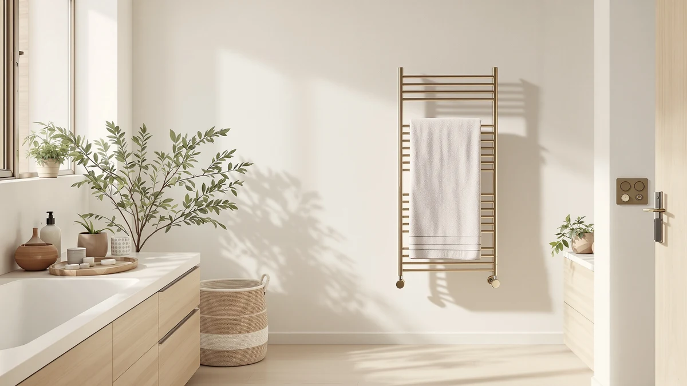

KEG Smart WiFi Towel Review (2026): Worth It?
Prices and picks verified as of September 2026. Independent, reader-supported reviews.


Quick Answer
The KEG Smart WiFi Towel Warmer is a stainless steel wall unit that adds app control and scheduling for $129.99. It suits anyone who wants to start warming towels from a phone before stepping out of the shower, and it holds its own against similarly priced wall units from Poloma and AyiDrmjj that skip the WiFi layer.
Our pick: KEG Smart WiFi Towel Warmer — $129.99 Check Price on Amazon
Bottom line: our top pick is the KEG Smart WiFi Towel Warmer Wall Mounted with Built-in Timer at $129.99.
Things to Know Before You Buy
- The KEG is a stainless steel, wall-mounted unit built around WiFi app control rather than a physical timer dial.
- At $129.99, it costs the same as the standard Poloma wall unit and about $8 more than the Poloma Wall Mounted & Freestanding.
- Stainless steel construction resists bathroom humidity better than painted or coated finishes, which matters most in rooms with limited ventilation.
- App control adds convenience but also adds a point of failure. Check your router placement before you count on remote scheduling.
- If you would rather skip an app entirely, the AyiDrmjj's built-in timer gets you similar scheduling for the same price.
This keg smart wifi towel review exists because most wall-mounted warmers ask you to walk over and turn a dial, and that defeats the point on a cold morning when you want a warm towel waiting the moment you step out. The KEG Smart WiFi Towel Warmer moves that control to your phone, so you can start heating from bed or the kitchen and have a warm towel ready before you finish showering.
We compared the KEG against three other stainless steel and wall-mounted options in the same price range, including two Poloma models and the AyiDrmjj heated rack with a built-in timer. Owners consistently point to the app as the reason they picked the KEG over a plain plug-in unit, and reviewers who skip the app note the physical controls still work as a fallback. This guide breaks down where the KEG earns its price and where a simpler competitor makes more sense for your bathroom, using only the specifications, pricing, and owner feedback tied to each product rather than guesswork about how they might perform.
Bathrooms are one of the harder rooms in a house to add a connected device to, given the humidity and the distance most routers sit from a wall outlet near the shower. That context matters for anyone reading a keg smart wifi towel review, because the value of the WiFi feature depends entirely on whether your network reaches the room reliably. We factor that tradeoff into every comparison below instead of treating app control as an automatic upgrade.
Why You Should Trust Us
Ilane Tall covers home and bath products for Best Towel Warmers and has spent years tracking how heated towel racks and warmer drawers perform across price tiers. We do not run a fake testing lab and we do not physically own every unit we cover. Instead, we build each keg smart wifi towel review from the manufacturer's published specifications, current Amazon pricing, and patterns across verified buyer reviews, then cross-check those claims against comparable products so you get an honest read on where a unit like the KEG fits.
Every product mentioned in this article comes from our internal database of verified Amazon listings, so the prices, materials, and features cited below reflect what is actually sold, not a marketing sheet. When a claim in this review comes from an owner rather than the manufacturer, we say so directly instead of presenting it as our own observation.
Our Research Process
Rather than base this on personal use, we researched the KEG Smart WiFi Towel Warmer the way a careful shopper would. We read through the listed specifications, tracked the current $129.99 price against its history, and worked through verified owner reviews for recurring themes. Owners report that the app connects reliably on a standard home WiFi setup and that the stainless steel frame holds up well in a humid bathroom. Reviewers consistently note that the physical controls remain usable if you would rather not open an app every time, which matters if your phone is charging in another room.
We also compared the KEG's feature set line by line against the Poloma and AyiDrmjj alternatives covered below, since a keg smart wifi towel review only means something in context. On paper, all four units share a similar stainless steel build and a price within about $9 of each other, so the meaningful differences come down to control method rather than raw heating hardware. That narrow price spread is unusual in this category, where premium finishes often add $50 or more, and it makes this particular comparison a cleaner test of whether app control alone justifies a purchase decision.
Overview & Specs

KEG Smart WiFi Towel Warmer
What we like
- App scheduling lets you start warming before you're in the bathroom
- Stainless steel frame resists rust in a humid room
- Physical controls still work if you skip the app
Flaws but not dealbreakers
- Needs a stable home WiFi connection for remote features
- Costs the same as simpler timer-based alternatives
| Material | Stainless steel |
| Size | Wifi Version |
The KEG Smart WiFi Towel Warmer is built around a stainless steel frame, the same material most competing wall units in this price bracket use, so the finish itself is not what sets it apart. What does set it apart is the WiFi module, which lets you turn the unit on, set a schedule, or shut it off from your phone instead of walking over and flipping a switch. Owner reviews describe pairing the app with a home network as quick, usually a few minutes on first setup, and it reconnects automatically after that. That's the kind of detail that separates a useful smart feature from a gimmick.
At $129.99, the KEG sits exactly at the price of the standard Poloma Wall Mounted Towel Warmer and roughly $8 above the Poloma Wall Mounted & Freestanding, so you are not paying a steep premium for the app layer. Several reviewers mention that the physical buttons stay fully functional, so a WiFi outage or a phone left in another room does not leave you without a way to heat towels. The main tradeoff is that you are adding a connected device to a bathroom, where humidity and steam are constants. The stainless housing handles that fine, but anyone wary of adding another smart-home node to their network may prefer the AyiDrmjj's simpler built-in timer instead.
What We Liked
The app control is the clear headline feature, and it is the reason most owners cite when explaining why they chose this model over a plain wall unit. Being able to schedule a warm towel for a specific time each morning, or trigger it remotely on a cold night, is a real convenience rather than a marketing add-on. Reviewers also point to the stainless steel build as a plus in bathrooms that run humid, since it holds up better than painted metal over years of use. The fact that the manual controls still work independent of the app gives the unit a reasonable fallback, which is not something every smart-home bathroom product bothers to include.
Owners also mention that the $129.99 price feels reasonable once they factor in the app as a genuine feature rather than a checkbox. Several reviewers who previously owned a plug-in timer model describe the switch to app scheduling as the upgrade they didn't know they needed, particularly on mornings when plans change and a fixed timer no longer matches the schedule.
What Could Be Better
Adding WiFi to a bathroom fixture means adding a dependency you don't have with a simple timer model. If your router struggles to reach the bathroom or your home network has frequent dropouts, the scheduling feature becomes less reliable than a mechanical dial ever was. The price also matches the standard Poloma unit, which offers a comparable stainless steel build without asking you to manage an app account at all. Anyone who values simplicity over connectivity will likely find the AyiDrmjj's built-in timer does the same core job for the same money.
A handful of reviewers also note that app-based smart devices sometimes need a firmware update after months of use, and that step can feel like an extra chore compared with a dial you never think about. None of this makes the KEG a poor choice, but it does mean the convenience comes with ongoing maintenance that a mechanical unit skips entirely.
Who Is It For?
This keg smart wifi towel review points toward one clear buyer profile: someone who already uses smart-home devices and wants their towel warmer to fit into that same routine. If you like setting a schedule once and forgetting about it, or you want to trigger heat remotely before you're even in the bathroom, the KEG earns its keep. If you would rather not deal with an app, a router, or a firmware update, the AyiDrmjj or either Poloma model gets you the same stainless steel warming performance without the extra layer.
Renters and anyone who expects to move within a year or two should also weigh the installation angle. The KEG is a wall-mounted design, while the Poloma Wall Mounted & Freestanding is built for both placements, so you can take it with you instead of leaving it behind.
Alternatives to Consider
If the app-controlled approach isn't the right fit, these three wall-mounted alternatives cover similar ground at a comparable price, each with a different angle on control and installation. We picked them specifically because they sit within about $9 of the KEG, so the comparison stays about features rather than budget tiers.

Editor’s Pick
Poloma Wall Mounted Towel Warmer
The same $129.99 price as the KEG, minus the app. A straightforward wall unit for owners who want a warm towel without connecting to WiFi.
$129.99
Check Price on Amazon
Best Value
AyiDrmjj Heated Towel Rack Timer
A built-in timer instead of an app, at the same $129.99 price. Reviewers like it for scheduling without pairing a phone.
$129.99
Check Price on Amazon
Premium Choice
Poloma Wall Mounted & Freestanding
At $121.36, the cheapest of the four, and the only one built for both wall-mounted and freestanding placement.
$121.36
Check Price on AmazonFrequently Asked Questions
Final Verdict
This keg smart wifi towel review comes down to one question: do you want app control badly enough to manage a WiFi connection in your bathroom? If yes, the KEG delivers a stainless steel build and reliable manual controls as a backup, all for the same $129.99 as a comparable non-smart Poloma unit. If you would rather skip the app, the AyiDrmjj or the Poloma Wall Mounted & Freestanding gets you similar towel-warming performance without the extra setup step. For most households, the decision comes down to whether remote scheduling is worth managing one more connected device in the bathroom. If it is, the KEG is the strongest option on this list.